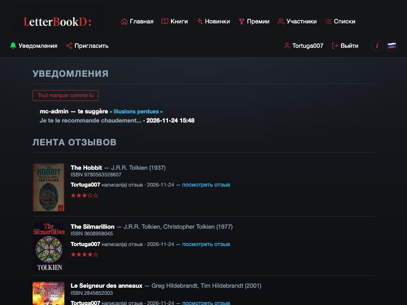

Уведомления
Зачем это нужно: Собрать всё, что касается лично тебя: предложения от других участников, реакции на твои отзывы, комментарии под твоими отзывами. А ниже, в общей ленте, все свежие отзывы твоего клуба.

Как это устроено
Страница состоит из двух разделов. «Уведомления» вверху: одна строка на событие, с ником отправителя, типом действия («предлагает тебе», «отреагировал на», «прокомментировал») и ссылкой на книгу или отзыв. Кнопка «Отметить всё как прочитанное» убирает бейдж с колокольчика. Внизу «Лента отзывов»: недавние отзывы, опубликованные в твоём клубе, каждый с обложкой, книгой, автором книги, автором отзыва и оценкой в звёздах, плюс ссылка «открыть отзыв».
Цепочки действий
Каждая строка — это триггер в интерфейсе, модалка или форма, которые он открывает, и результат.
| Триггер | Модалка / Поля | Эффект |
|---|---|---|
| Кнопка «Отметить всё как прочитанное» | POST-форма. | Помечает все твои уведомления как прочитанные. Колокольчик вверху справа меняет цвет с зелёного на серый. Уведомления остаются в истории, но больше не считаются непрочитанными. |
| Ссылка в уведомлении (название книги, «открыть отзыв») | — | Открывает контекст: карточку книги с якорем на комментируемый отзыв. |
| Ссылка «открыть отзыв» в ленте | — | Открывает карточку книги, сфокусированную на нужном отзыве. |